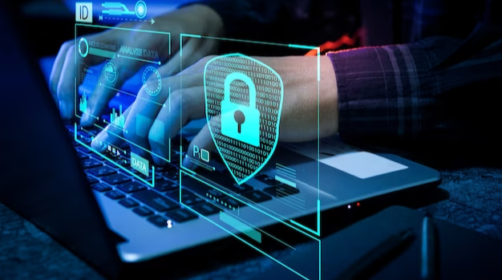
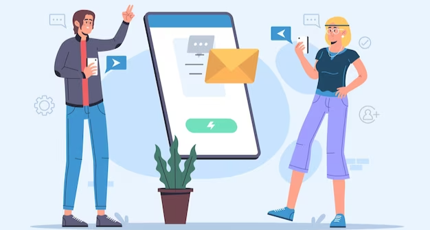

One of the best ways to keep an organization's network safe from phishing attacks is to provide employees with practical and effective cybersecurity training. Unfortunately, even after the pandemic hit, many organizations still don't offer this type of training - even though some organizations have shifted entirely online. Enterprises that do provide this type of training often make it a one-time event, rather than something that's ongoing.
Even the best training won't do any good if it's not delivered effectively. Online training modules may cause employees to skim over the material and miss the point of the lesson. In-person training sessions might not be possible for companies that have gone remote. However, other factors such as enough training time and effective testing can make online training meaningful.
Several services exist to stop or minimize phishing attempts by cybercriminals. For example, some companies send out harmless phishing emails to employees as a way to collect metrics which are then reported to management. This data helps to show how effective current anti-phishing measures are, such as training programs and spam filters. phishprotection.com has great information on phishing prevention best practices. To learn more, visit the site.
Best practices that organizations and even individuals can use to avoid phishing attacks:

Emails asking the reader to click on a link or download an attachment should not be entertained unless the email is expected and sent by a known sender, such as for email verification by a service that the user signed up for a few moments ago.
A backup of system copies allows IT personnel to fall back to an uncompromised system state if a phishing attack is ever successful and malware or other malicious software are introduced into the system infrastructure.
Users must ensure the presence of ‘HTTPS’ (and not ‘HTTP’ without the ‘S’) when transmitting sensitive data online. This helps ensure that the information being conveyed is passing through a secured channel.
Pop-up windows are a common tool used by phishers. Unless the user’s website is completely trustworthy, information should never be entered into a pop-up window. Most browsers allow users to restrict pop-up windows from showing up and allow exceptions to be made for trusted domains.
Keeping employees informed about the latest phishing scams and the techniques and technologies that the company is using to prevent them is very important. Outsourcing this task to a specialist can also be considered, especially as companies move toward a remote work environment.
A reliable firewall protects all users on the corporate network from malicious code that might be sent in through a phishing email.

Anti-spam software protects against phishing attacks by filtering out emails from known phishers and other cybercriminals. Without this software, these emails might show up directly in employees’ inboxes, increasing the chances of being considered legitimate.
DNS pharming is a new type of phishing attack that doesn't use pop-up windows or carefully-crafted emails. Instead, it involves 'poisoning' a person's local DNS server. If the attack is successful, the user will be redirected to a fake website when they try to visit the real one.
Administrators can protect against DNS pharming attacks by 'locking down' DNS servers using security measures. By doing this, they can make sure that only authorized users can access and change DNS records.
In summary, the Phishing Scam is everywhere. It is becoming more innovative and harder to detect, however, there are some simple tips that can help protect you. First, never click on links in emails that ask you to update personal information or financial information. Always go directly to the company's website and check your account. You should also be cautious of opening attachments in emails.